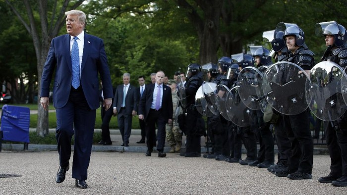

Tolak Pembubaran Polisi, Trump: 99 Persen Polisi AS Orang-orang Hebat

Sumber :https://www.detik.com/
Presiden Amerika Serikat (AS) Donald Trump menegaskan tidak akan ada pemangkasan anggaran maupun pembubaran departemen kepolisian yang akan terjadi. Trump mengklaim bahwa 99 persen polisi di AS merupakan 'orang-orang hebat'.
Seperti dilansir CNN, Selasa (9/6/2020), penegasan itu disampaikan Trump dalam pertemuan meja bundar dengan anggota otoritas penegak hukum di Gedung Putih pada Senin (8/6) waktu setempat. Dalam pertemuan itu, Trump memuji para pemimpin penegak hukum yang hadir.
Dia juga memuji rendahnya angka kriminalitas di AS untuk tahun ini. Trump bahkan menyebutnya sebagai 'tahun yang kuat untuk sedikit kejahatan'.
"Tidak akan ada pemangkasan anggaran, tidak akan ada perombakan polisi kita. Dan tidak akan ada pembubaran polisi kita, polisi kita telah membuat kita hidup dalam damai," tegas Trump dalam pernyataannya.
Lebih lanjut ditegaskan Trump bahwa dirinya ingin memastikan tidak ada 'aktor buruk', tapi dia merasa 99 persen polisi merupakan 'orang-orang hebat'.
"Terkadang Anda akan melihat beberapa hal mengerikan seperti yang kita saksikan baru-baru ini, tapi 99, saya katakan 99,9, tapi mari kita sebut 99,9 persen dari mereka merupakan orang-orang hebat dan mereka melakukan pekerjaan yang mencetak rekor," sebut Trump.
Trump menolak untuk menjawab pertanyaan dari wartawan soal respons pemerintahannya terhadap aksi protes yang berlanjut pada Senin (8/6) waktu setempat. Aksi memprotes rasialisme dan kebrutalan polisi usai kematian pria kulit hitam bernama George Floyd, masih berlanjut. Dalam aksi terbaru, para demonstran menyerukan defunding atau pemangkasan dana untuk kepolisian dan pembubaran kepolisian.
"Kami berkomitmen untuk membubarkan kepolisian yang kita kenal di kota Minneapolis dan untuk membangunnya kembali dengan masyarakat kita, sebuah model baru untuk keselamatan publik yang benar-benar menjaga masyarakat tetap aman," tegas Bender kepada CNN.
kembali


 Copyright@2020
Copyright@2020